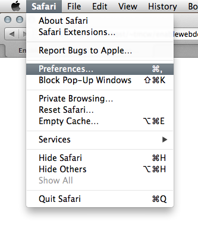
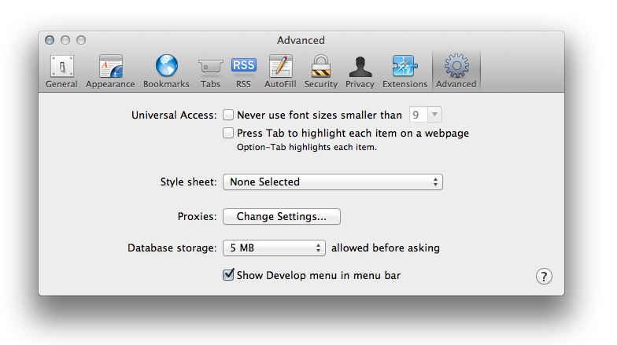
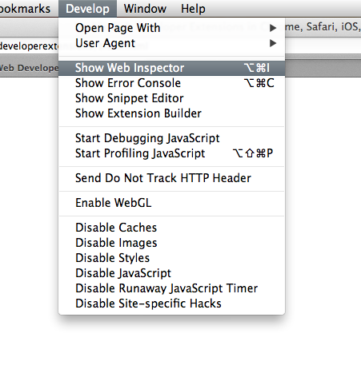
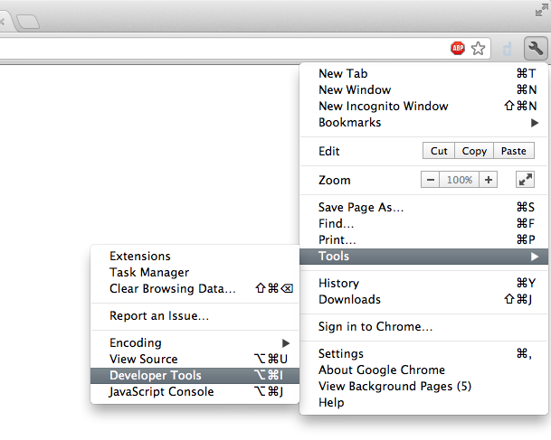
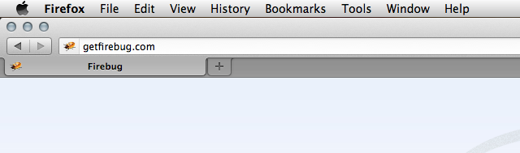
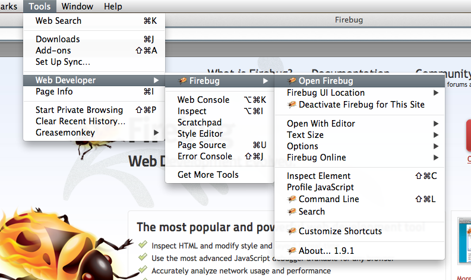
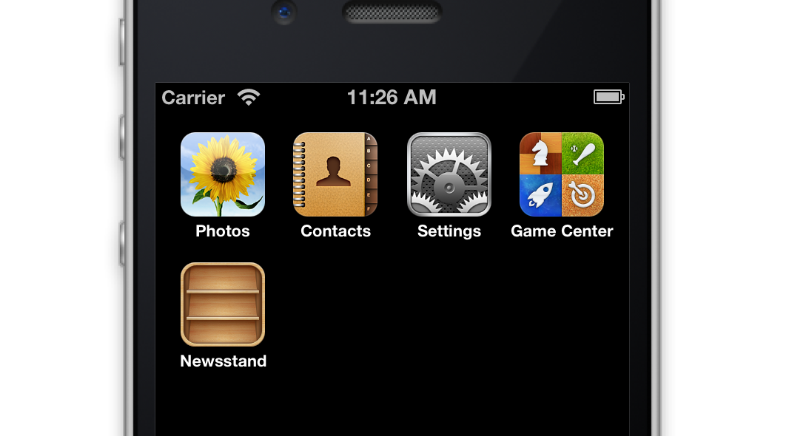
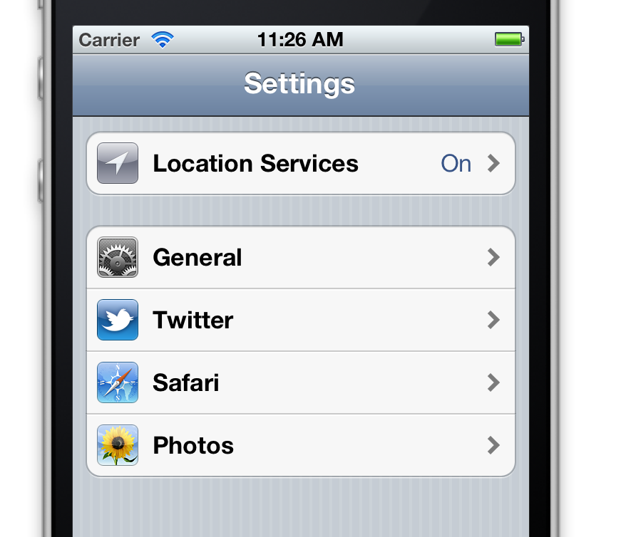
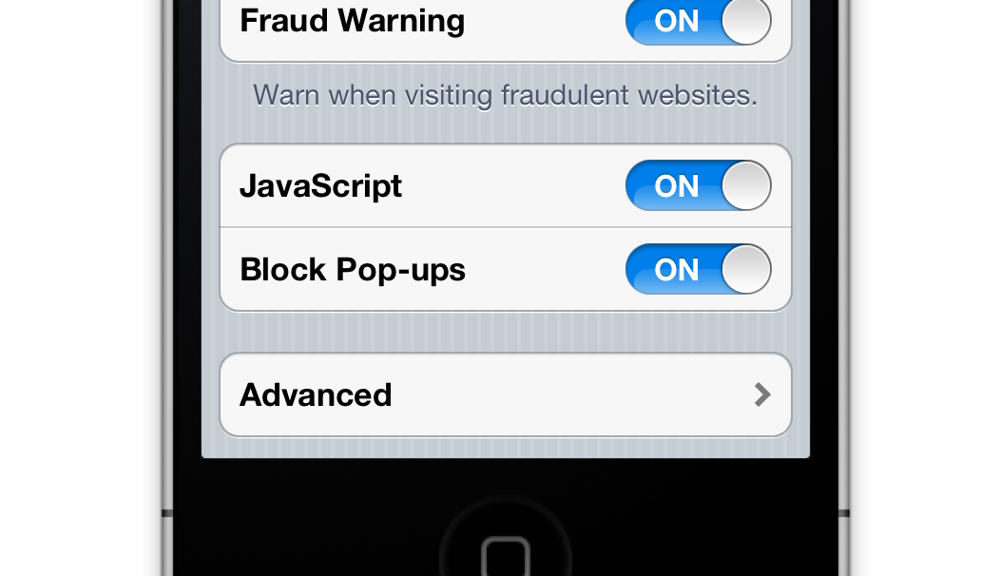
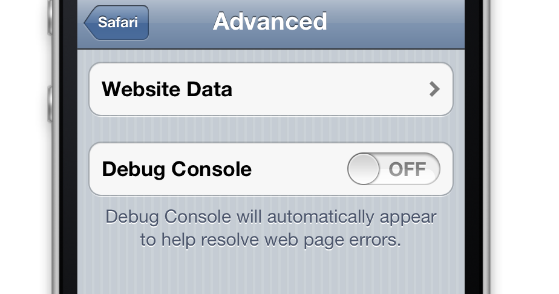

Enable Web Developer Extensions
With web developer extensions, you can debug broken web pages and provide
better feedback to web developers.
Directions for Safari, Chrome, Firefox,
Mobile Safari, Internet Explorer
Safari
Select Preferences in the Safari menu

Check the Show develop in the menu bar option

Click Show Web Inspector in the Develop Menu

Click Developer Tools in the wrench menu, tools, and Developer Tools


Start Firebug at Tools / Firebug / Open Firebug

Mobile Safari (iPhones)
Touch Settings on the home screen

Touch Safari on the settings screen

Touch Advanced on the safari screen

Toggle debug console to true

A debug bar will now appear at the top of each webpage in mobile Safari.
IE
One option is installing the Internet Explorer Developer Toolbar
from Microsoft. It's something like a web inspector, but like Internet Explorer
itself, is awful. Firebug Lite
is a decent, open-source option. DebugBar
is a closed-source, annoyingware option but is likely a bit more complete
than Firebug Lite.
this tiny bit of knowledge brought to you by macwright.org
you can fork and improve this site on github